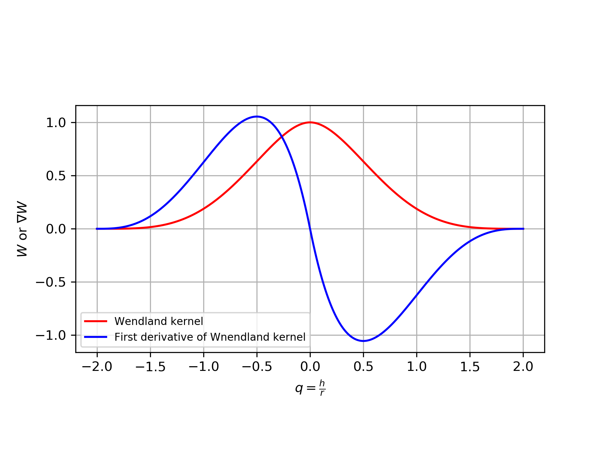

粒子法の特徴
粒子法では粒子自身が物理量を保持し空間を自由に動き回ることができる．
そのため，有限差分法(FDM)や有限体積法(FVM)に代表される格子法と異なり，複雑な自由表面の変形や細かい水しぶき等の再現性が高いという特徴がある．代表的な粒子法として，完全陽解法のSPH(Smoothed Particle Hydrodynamics)法，
半陰解法のMPS(Moving Particle Semi-implicit)法，そして固体を対象としたDEM(Distinct Element Method)法がある．
SPH法による離散化
SPH法では，ある位置$\boldsymbol{x}$に存在する粒子の物理量$f(\boldsymbol{x})$を周辺領域$\Omega$における積分補間で表す．
$f(\boldsymbol{x})=\int_{\Omega} f(\boldsymbol{x}')W(\boldsymbol{x}-\boldsymbol{x}', h)dV$
右辺の$W$はカーネル関数と呼ばれる重み関数で，2粒子間の距離が近いほど大きい重みを返す．例として，以下にカーネル関数の1つであるWendland kernelとその1階微分を示す．
$W=\alpha
\begin{cases}
(1-\frac{q}{2})^4(1+2q) & (0\le q\le 2)\\
0 & (q>2)
\end{cases}$
$q=\frac{r}{h}$
$\alpha^{2D}=\frac{7}{4\pi h^2},\ \ \ \alpha^{3D}=\frac{21}{16\pi h^3}$

ここで，$h$は平滑化長，Smoothing length等と呼ばれる領域$\Omega$の広さを決定するパラメータである．上記の積分形式のままではコンピュータで計算することが
出来ない．そこで，$f(\boldsymbol{x}_i)$を周辺粒子の物理量$f(\boldsymbol{x}_j)$の重み付き平均で近似する.
$f(\boldsymbol{x}_i)=\int_{\Omega} f(\boldsymbol{x}_i)W(\boldsymbol{x}_i-\boldsymbol{x}_j, h)dV
\approx \sum_jf(\boldsymbol{x}_j)\Delta V W(\boldsymbol{x}-\boldsymbol{x}', h)$
更に，$\Delta V=\frac{m}{\rho}$とすると最終的に以下の式が得られる．
$f(\boldsymbol{x}_i)=\sum_j\frac{m_j}{\rho_j}f(\boldsymbol{x}_j)W(r_{ij}, h)\ ;\ r_{ij}=|\boldsymbol{x}_i-\boldsymbol{x}_j|$
次に，物理量$f(\boldsymbol{x}_i)$の空間微分$\nabla f(\boldsymbol{x}_i)$はカーネル関数の空間微分を用いて以下のように求められる．
$\nabla f(\boldsymbol{x}_i)=\sum_j\frac{m_j}{\rho_j}f(\boldsymbol{x}_j)\nabla W(r_{ij},h)$
しかしこの式は一般的に使用されない．カーネル関数の1階微分は上の図からも分かるように$\nabla_iW_{ij}=-\nabla_jW_{ij}$
を満たすが，例えば$f=p$(圧力)とすると作用力が対称にならないためである．そこで以下の2式が代わりに用いられる．
$\nabla f(\boldsymbol{x}_i)=\frac{1}{\rho_i}\left[\sum_jm_j(f(\boldsymbol{x}_j)-f(\boldsymbol{x}_i))\right]\nabla W$
$\nabla f(\boldsymbol{x}_i)=\rho_i\left[\sum_jm_j(\frac{f(\boldsymbol{x}_j)}{\rho_j^2}+\frac{f(\boldsymbol{x}_i)}{\rho_i^2})\right]\nabla W$
おまけ
カーネル関数を表示するPythonコード．